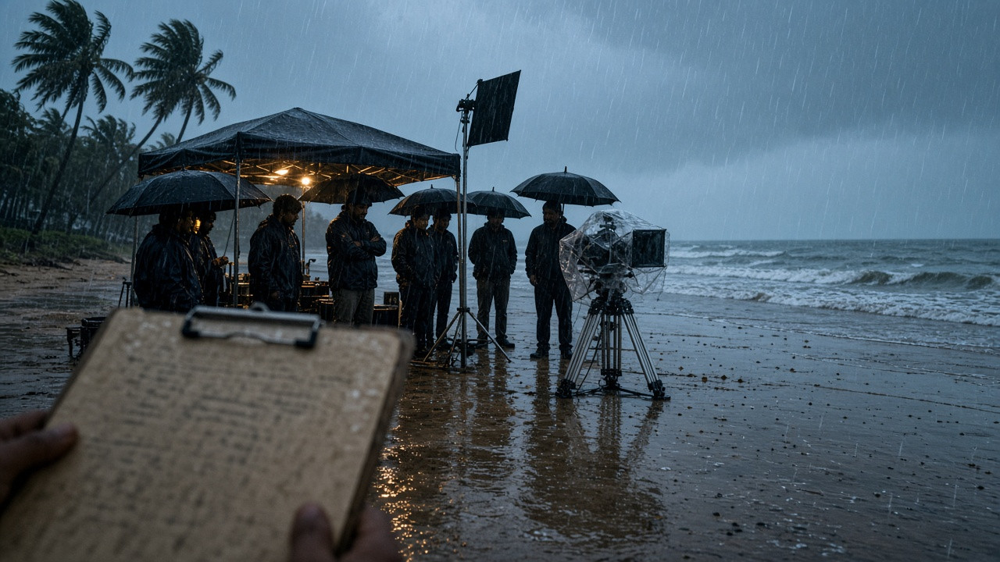
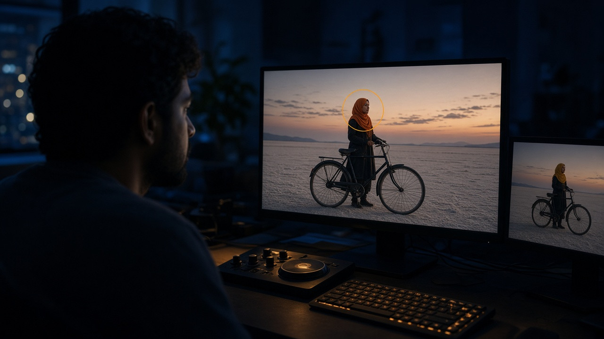
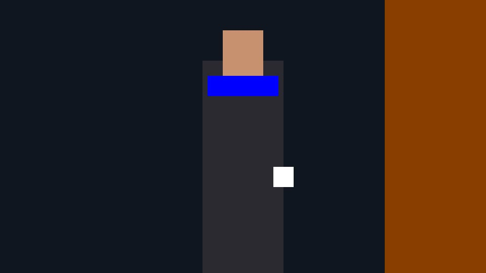

From first scene
to final delivery.
AI workflows for the problems between your first scene and final delivery. We make films, we teach the craft, and we are building V AI, starting with continuity: preparing what a film must hold, and reviewing shots from mixed tools and vendors against it, with the evidence shown.
Our films are released. V AI is a Prototype
We write the song. Then we make the film.
Stay Standing
The first release. A song about staying upright when the reasons to have run out.
Prometheus
The myth of Prometheus, who stole fire from the gods and gave it to humanity, retold as a cinematic music video: the punishment returns every day, but the fire survives.
The Duel of Musashi & Kojiro
Two swordsmen. One shore. No dialogue. The most famous duel in Japanese history, told in three minutes and a score written for it.
Can you spot the break?
Two shots from the same scene, filmed a week apart. Something changed. Two things, in fact. Click where you see them.
- Serious: the headscarf is orange; the record has it yellow since shot 1. Fix it, unless the change is scripted.
- Noticeable: Ravi took the cigarette in shot 2, so it should not be behind either ear in shot 4.
- Not checked: anything the shot did not show. It says so instead of guessing.
After fourteen hours on set, people miss the second one. A vendor who never saw shot 1 cannot catch either. V AI checks the new shot against what the film already established, and a person decides.
Today: the check runs in our prototype Prototype. Keeping each decision for the next shot is the saved record Planned.
Before, during and after the shoot.
 AI-generated illustration
AI-generated illustrationThe scene hover an item to see where it came from
EXT. SALT FLATS - DUSK
ASHA (30s, yellow headscarf, silver ring on her left hand) drags a broken bicycle toward a parked jeep. RAVI (50s, khaki jacket, cigarette behind his right ear) leans on the bonnet, sun low behind him at frame right.
SHOT 1: wide, Asha small in frame left, jeep at frame right.
SHOT 2: medium on Ravi, he takes the cigarette from behind his ear.
SHOT 4: two-shot, he offers her water in a steel bottle.
What V AI drafted
And a question back: is the cigarette still there in shot 4? The script does not say, so it asked.
On the same day the step read all 190 scenes of a 203-page feature screenplay in about two and a half minutes. Its accuracy against a human breakdown has not been measured yet.

AI-generated illustrationThe approved day
| When | Scene | Where |
|---|---|---|
| Day 3, 07:30 | Sc 9–11, beach, exterior | Shore |
| Day 3, 14:00 | Sc 12, beach, exterior | Shore |
| Day 5 | Sc 14–15, cottage, interior | 8 minutes away, dressed |
Supplied Heavy rain from 10:40. The lead actor is free until 18:00.
Options proposed
| Option | Trade-off |
|---|---|
| A · Bring the cottage scenes forward to today | Beach scenes move to Day 5 morning Assumed free |
| B · Shoot the close-ups under the pier | Wides still owed; wet hair must hold into Sc 11 |
| C · Wrap | A day lost |
Unresolved Day 5 weather; the location permit for a changed date. The first AD picks one option, and a revised call sheet is drafted with the reason kept.

AI-generated illustration
- Record expected
- Ravi: khaki jacket. Cigarette taken in shot 2. Light: low sun at frame right, dusk.
- V AI observed
- The coat reads dark charcoal, not khaki. A blue band at the neck. A small white object near the hand.
- Unresolved
- The cigarette, the light direction and the jeep could not be judged from this frame.
- Decision
- None recorded: the run ended at the report. Saved approvals are planned.
The question
A vendor delivers a new version of Ravi's medium shot. Does it still belong to the film?
What V AI reported
- Possible break, serious: Ravi's jacket reads dark charcoal; the record says khaki
- New, for you to approve: a blue band at the neck and a small white object, neither in the record
- Could not judge: the cigarette, the light direction, the jeep
- Its own caveat: one frame only; a second pair of eyes, not a verdict
Why it matters
The vendor who made the shot never saw the shots before it. The review compares against the record they never had. A person makes the call: a second model can share the first one's blind spots, so it never has the last word.
The check is a prototype and not yet reliable on real footage. Results are on the Research page.
Make a film. Or learn to.
 AI-generated illustration
AI-generated illustrationMake a film with us
For artists, brands and producers. You get a music video, short or campaign made in-house Available service, or a person-led continuity review of a reel you already have Pilot by enquiry.
Learn to make films
For people who want to direct, from a first film to working professionals. Today one-to-one and group sessions on the latest AI tools, booked when you need them Available service. Coming a 48-week programme built around six films Planned.
A jacket tears in scene four.
Every later scene must show it torn. The flashback to the week before must show it whole. Switch between the three orders a film lives in, and watch each scene keep the right jacket.
The jacket photos are an AI-generated illustration. The tiles show what the saved record is being built to do Planned. Pre-production, production and post-production are the stages; these are the timelines the record keeps apart.

Gurudath Sadanandan.
Founder of Videogrammer. Writer, director, editor and colourist of the Videogrammer Studios films. He writes the songs under his artist name, NAMA.
- On Pexels: 210.5 million views of his stock photographs and videos (public profile, 10 November 2026)
- NAMA on YouTube: 17 music videos (10 November 2026)
Videogrammer Research measures how well AI holds a film together, and publishes the results, including the poor ones. Research →